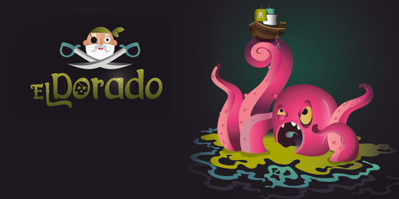

Voor alle tekst toepassingen wordt Roberto gebruikt (links, quotes en bijschrijvingen behoren ook tot deze categorie. Bij de tekst maken wij gebruik van 14pt en 9pt op mobile toestellen. Voor de titels gebruiken wij Julius Sans Pro, 20pt bij dekstop en bij mobile toestellen is dat dan 10pt. Alle tekst die een achtergrondkleur als darkbat #323337, nightblue #2E4B51 heeft krijgt ofwel witte of skyblue #B6D5BB kleur. Voor de titels gebruiken wij darkbat #323337, nightblue #2E4B51.
Titel voor dekstop 20pt - Julius Sans One
Tekst voor dekstop 12pt - Roberto
Titel voor mobile toestellen 12 pt - Julius Sans One
Tekst voor mobile toestellen 9 pt - Roberto
Deze pallet wordt gebruikt omdat wij gebruik maken van de klassieke nightblue theme. Als deze kleuren behoren tot die categorie. Wij gebruiken ook vaak wit, maar die staat er niet in.
Het logo heeft een font-size van 30pt en de font Julius Sans Pro. De achtergrond van het logo is een graphic art die met de behulp van Illustrator werd gemaakt.
Bij afbeedingen en kaders wordt er gebruik gemaakt van een border van 5px die solid is en het kleur wit of darkbat #323337 heeft.

Voor de meeste hover werk, wordt er gebruik gemaakt van de skyblue #B6D5BB tint. Vooral bij knoppen is het anders, daar wordt er gebruikt gemaakt van het nightblue tint, Nightblue. De knoppen zelf hebben een darkbat #323337 als achtergrond en de tekst die erin staat heeft de skyblue #B6D5BB kleur.
Er worden ook lijnen gebruikt. Als de achtergrond nightblue #2E4B51 is, gebruiken wij witte lijnen anders lijnen van skyblue #B6D5BB kleur, solid en 5px.
Er worden twee achtergrond kleuren gebruikt, ze worden samen gehangd zodat de website een rustige sfeer en structuur heeft, en ook makkelijk te gebruiken is. Deze zijn de twee kleuren.
Bij lijsten wordt er gebruik gemaakt van roemeense kapitaal cijfers (list-style-type: upper-roman) als eerste niveau en voor de tweede niveau wordt er gebruikt gemaakt van squares (list-style-type: square) met een margin-right van -2em.
De iconen die wij gebruiken zijn van fontawesome.io en worden met een lettergrootte van 24pt gebruikt. voor de hover wordt er dan weer gebruikt gemaakt van het kleur skyblue #B6D5BB .
De iconen die wij gebruiken zijn van fontawesome.io en worden met een lettergrootte van 24pt gebruikt. voor de hover wordt er dan weer gebruikt gemaakt van het kleur skyblue #B6D5BB .